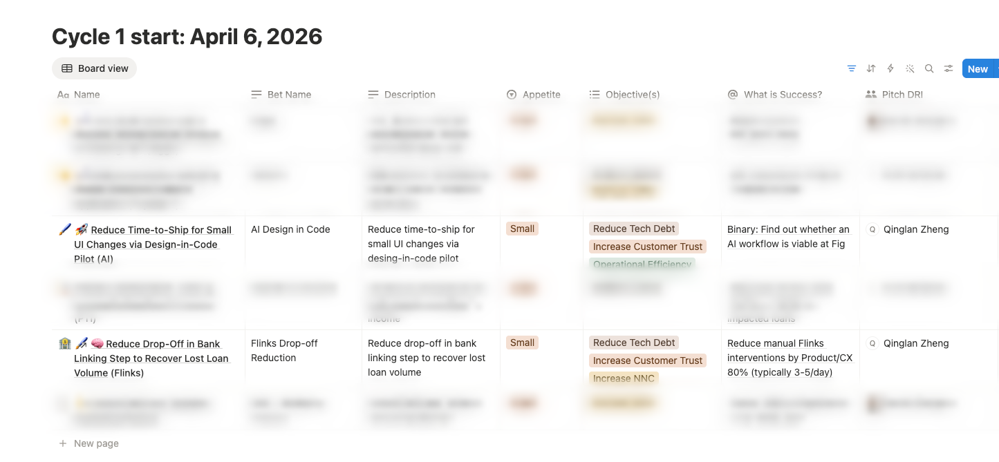
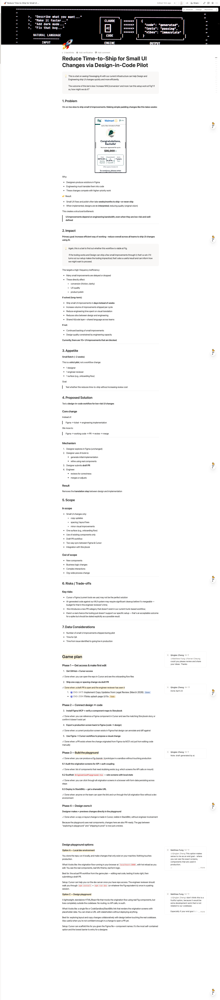

From weeks to days: building a design-in-code workflow at Fig
How I pitched a two-week pilot, wired Figma and Claude into our production codebase, and turned small UI fixes from a weeks-long queue into same-day draft PRs.
Small UI fixes took weeks
Copy tweaks, spacing fixes, a reordered form field — the kind of change that should take an afternoon was queued behind sprint planning, engineering handoff, and a staging cycle. By the time I counted, more than 10 small improvements were sitting blocked, none of them contentious, all of them stuck in the same handoff chain.
The cost wasn't any single fix. It was the compounding drag: designers describing changes instead of making them, engineers re-deriving intent from a Figma frame, and a queue that only grew.
A two-week pilot, Shape Up style
I pitched leadership a small, time-boxed bet: one designer, one engineer, one surface, two weeks. Not a platform initiative — a test of whether AI tooling could let a designer ship real UI changes without breaking engineering review.
"I wasn't sure Phase 3 would ever become real. It did."


From a first PR to a production playground
First PR from Cursor
The engineer and I shipped the first real change together, from a Cursor session directly into a draft PR — proving an AI-assisted diff could survive review unchanged.


Figma MCP connected to the codebase
We wired Figma's MCP server into the repo so component structure, tokens, and layout could be read directly from the design file instead of re-described by hand — backed by a real component library in Storybook.

The Design Playground
Production screens running with local state and mock data — a sandbox where I could test real UI against real components without touching a shared environment.

Figma or a prompt, to a merged PR

Weeks became days — with review intact
The pilot didn't remove engineering — it removed the parts of the process that existed only to translate intent from one person to another. Review stayed. The queue didn't.